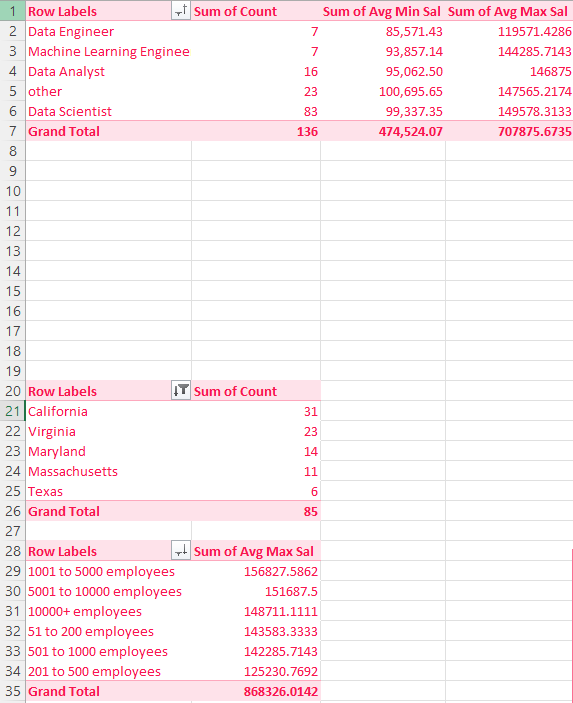
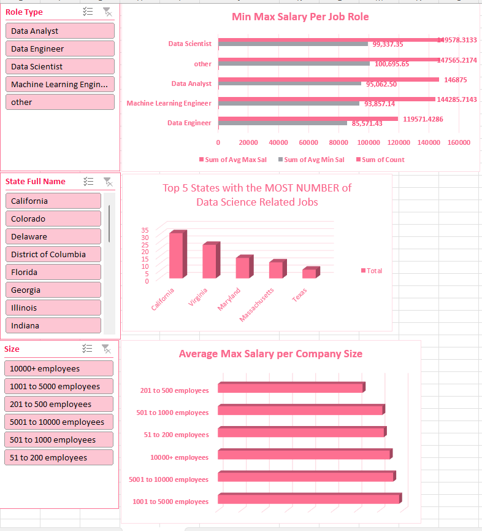

Midterm Lab Task 3 - Creating Pivot Table and Dashboard
This page contains my lab activity on analyzing data using Pivot Tables and creating a Dashboard in Excel.
Step 1: Prepared the Data
- Used tables: Sal By Role, Sal By State, Sal By Size
- Created extra tables to check job sectors
Step 2: Dashboard Insights
- The state with the most data science jobs
- The job role with the highest average salary
- The company size that pays the most
- The sector with the least and most data science jobs
- The sector with the lowest and highest average salary
Step 3: Pivot Tables and Charts
- Grouped salaries by role, state, and company size
- Created charts to make the data easy to understand
Step 4: Dashboard Enhancements
- Added slicers to filter by Role, Company Size, and State
- Used a map chart to show salaries by state
- Designed a clean and readable dashboard
Here's the screenshot of my output before I started creating pivot tables and charts (See screenshot)

Pivot Table for each analysis
Slicers and Filters
Map

Here's the Final Dashboard Output